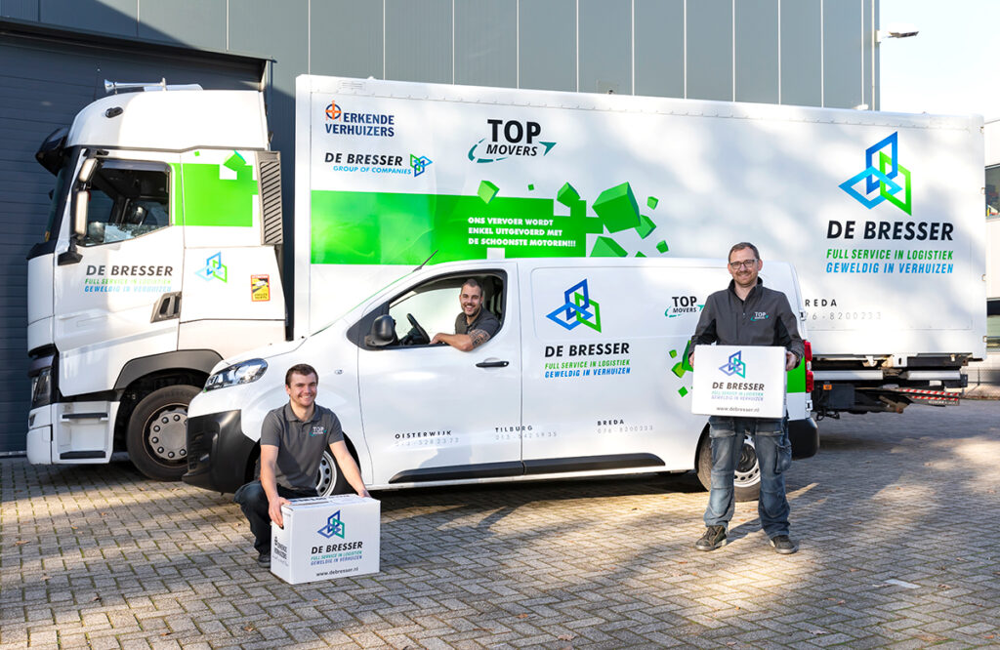

Removal company Maastricht
De Bresser is your partner for local, national and international removals.
Removal company De Bresser helps with your removal in Maastricht!
De Bresser has been at your service for more than 100 years. We take care of removals, transport, logistics, storage and more. Your removal in Maastricht is in good hands with us! Because we work in a well-organised way, you will never be faced with surprises with us. The common thread in our service is that we always aim for 100% satisfied customers. A deal is a deal, and honesty comes first. To make your removal in Maastricht go as smoothly as possible, the process is discussed with you in detail beforehand. This can be done by phone or video call, but we prefer to arrange a meeting with one of our advisers at your location. Would you like to know what our removers can do for you in Maastricht? Then feel free to get in touch with us , without obligation.
Looking for removers in Maastricht? Then stop searching
De Bresser specialises in both small and large removals throughout the Netherlands. A removal is a big event and often causes a lot of stress. After an intake and drawing up the quote, packing the boxes can begin. You can do this yourself, but our removal service can also help you with this in Maastricht. If you prefer to pack your own belongings, we will deliver packing materials to your home before the removal. To make sure everything goes smoothly on moving day, someone visits the location a few days before the removal. Everything is discussed, and if anything still needs to be arranged, we can respond to it quickly. Read more here about our approach, so you know what to expect when you arrange your removal with De Bresser.

Moving in Maastricht: what we take into account
Maastricht is a beautiful city to live in, but for a removal company the city brings a number of challenges that we deal with every day. The historic city centre, the Stokstraatkwartier, Wyck and the Jekerkwartier have narrow streets and are partly low-traffic or pedestrian zones, where loading and unloading is only permitted during set time windows. In monumental canal houses and older apartments around Céramique and the Sphinxkwartier, staircases and doorways are often too narrow for large furniture; in these cases we use a moving lift, and our removers disassemble wardrobes, beds and desks where necessary. For removals on or towards the Sint Pietersberg and the slopes around Heer and Amby, we choose manoeuvrable box trucks rather than articulated lorries. This way, we make sure your removal goes as smoothly as possible.

Your removal in Maastricht arranged down to the last detail
Are you moving in or to Maastricht? Then De Bresser is ready for you! Once all the preparation is done, moving day arrives. You will be called by our office team the day before to confirm the times. This means everything will run smoothly during the removal, so that later that day you can enjoy a cup of coffee in your new home with peace of mind. Once the removal is finished, you can start unpacking. Our specialists can help you with this too. We will of course also collect the packing materials from you afterwards. You can also always come to us with questions or comments after the removal. Request more here a quote, and who knows, we might see you soon!
Frequently asked questions about moving in Maastricht
How much does a removal in Maastricht cost?
A removal in Maastricht is always priced by De Bresser in advance, based on a fixed quote, so you are never faced with surprises. The price depends on the size of your household contents (m³), the distance between the old and new address, the floor and whether a lift is present, and any extra services such as packing or storage.
How many removers do I need for my removal in Maastricht?
For a studio or small apartment in Maastricht, we usually deploy two removers, for a terraced house three, and for a detached house four or more. In the city centre or in older buildings without a lift, we often plan one extra remover because of longer walking distances and the use of a moving lift. During the intake, our adviser recommends the right team size based on your household contents and situation.
How far in advance should I book my removal in Maastricht?
We recommend booking your removal in Maastricht at least four to six weeks in advance, and six to eight weeks during the high season (March to October) or around the turn of the month, when many rental contracts start. Do you need a removal at shorter notice? Thanks to our planning and flexible teams, we can often also arrange urgent removals within one to two weeks.
Do you also arrange removals in the city centre of Maastricht and in Wyck?
Yes, removals in the city centre of Maastricht, Wyck, the Stokstraatkwartier and the Jekerkwartier are everyday work for us. We use compact box trucks for the narrow streets and low-traffic zones, and use a moving lift where stairwells are too narrow for your furniture.
Do you arrange international removals from Maastricht to Belgium or Germany?
Yes, thanks to Maastricht's location, less than half an hour from Liège and Aachen, we regularly arrange cross-border removals to Belgium (Liège, Hasselt, Brussels, Antwerp) and Germany (Aachen, Cologne, Düsseldorf), and further into Europe.
Do you have storage close to Maastricht?
Yes, De Bresser offers secure storage for customers in Maastricht, both for short-term (bridging the gap between two homes) and longer-term needs. You will notice nothing logistically about the location of our depot: we load your household contents in Maastricht and arrange the transport to our storage and later back to your new address entirely for you, without any extra repacking. Read more about our storage services.